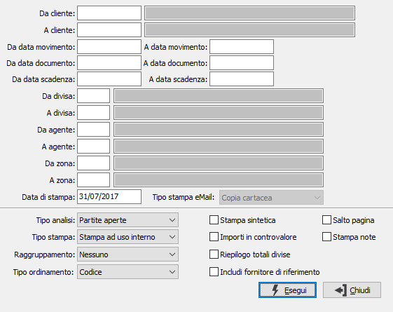

Stampa estratto conto clienti
I programmi provvedono alla stampa di estratti conto relativi a clienti, sia ad uso interno che esterno.
Per gli estratti conto clienti scegliere Contabilità, Partite aperte clienti, Stampa estratti conto clienti, appare la seguente finestra video:

DA CLIENTE: indicare il codice del cliente da cui si intende iniziare la stampa dell'estratto conto; confermando a vuoto la stampa inizia dal primo codice valido. Sul campo è attiva la ricerca F9
A CLIENTE: indicare il codice del cliente con cui si intende far terminare la stampa dell'estratto conto; se si conferma a vuoto la stampa termina con l'ultimo codice valido. Sul campo è attiva la ricerca F9
DA DATA MOVIMENTO: indicare la data di registrazione con cui si vuole iniziare la lettura dei movimenti. Confermando a vuoto la stampa inizia con il primo movimento valido presente sulla tabella movimenti contabili per il primo conto selezionato.
A DATA MOVIMENTO: indicare la data di registrazione con cui si vuole terminare la lettura dei movimenti. Confermando a vuoto la stampa termina con l’ultimo movimento valido presente sulla tabella movimenti contabili per l'ultimo conto selezionato.
DA DATA DOCUMENTO: indicare la data documento con cui si vuole iniziare la lettura dei movimenti. Confermando a vuoto la stampa inizia con il primo movimento valido presente sulla tabella movimenti contabili per il primo conto selezionato.
A DATA DOCUMENTO: indicare la data documento con cui si vuole terminare la lettura dei movimenti. Confermando a vuoto la stampa termina con l’ultimo movimento valido presente sulla tabella movimenti contabili per l'ultimo conto selezionato.
DA DATA SCADENZA: indicare la data di scadenza con cui si vuole iniziare la lettura dei movimenti. Confermando a vuoto la stampa inizia con il primo movimento valido presente sulla tabella movimenti contabili per il primo conto selezionato.
A DATA SCADENZA: indicare la data di scadenza con cui si vuole terminare la lettura dei movimenti. Confermando a vuoto la stampa termina con l’ultimo movimento valido presente sulla tabella movimenti contabili per l'ultimo conto selezionato.
DA DIVISA: indicare il codice della prima divisa di cui vogliono stampate le partite. Confermando a vuoto la selezione inizia con la prima divisa valida. Sul campo è attiva la funzione di ricerca (F9).
A DIVISA: indicare il codice dell’ultima divisa di cui vogliono stampate le partite. Confermando a vuoto la selezione termina con l’ultima divisa valida. Sul campo è attiva la funzione di ricerca (F9).
DA AGENTE: indicare il codice dell'agente da cui si intende iniziare la stampa; confermando a vuoto la stampa inizia dal primo codice valido. Sul campo è attiva la funzione di ricerca (F9).
A AGENTE: indicare il codice dell'agente con cui si intende far terminare la stampa; se si conferma a vuoto la stampa termina con l'ultimo codice valido. Sul campo è attiva la funzione di ricerca (F9).
DA ZONA: indicare il codice della zona da cui si intende iniziare la stampa; confermando a vuoto la stampa inizia dal primo codice valido. Sul campo è attiva la funzione di ricerca (F9).
A ZONA: indicare il codice della zona con cui si intende far terminare la stampa; se si conferma a vuoto la stampa termina con l'ultimo codice valido. Sul campo è attiva la funzione di ricerca (F9).
DATA DI STAMPA: indicare la data in cui viene stampato l'estratto conto (viene proposta la data di sistema, modificabile).
TIPO STAMPA EMAIL: Definisce come deve essere stampato l'estratto conto in presenza di invio massivo via email/fax. Il campo è attivo in caso di stampa ad uso esterno o su carta intestata; nel caso si scelga l'opzione di Invio email/fax non sarà possibile effettuare raggruppamenti. Valori ammessi:
Copia cartacea: saranno stampati tutti gli estratto conto dei clienti per i quali non è definito un recapito di invio.
Stampa tutte le copie: saranno stampati in forma cartacea tutti gli estratto conto (anche quelli per i quali è definito un recapito di invio).
Invio email/fax: sarà preparato l'allegato per l'invio mail/fax per i clienti per i quali è stato definito un recapito di invio.
TIPO ANALISI: combo box per definire lo stato delle partite da esaminare. Valori ammessi: Partite aperte; Partite aperte e partite esposte; Partite chiuse.
TIPO STAMPA: combo box per definire la forma della stampa in relazione all’uso. Valori ammessi:
stampa ad uso interno (riporta anche i riferimenti contabili e alla partita).
stampa ad uso esterno (ha il formato di una lettera, stampa la ragione sociale dell’utente e non riporta i riferimenti contabili e alla partita)
stampa su carta intestata (ha il formato di una lettera e non riporta i riferimenti contabili e alla partita)
RAGGRUPPAMENTO: definisce quale raggruppamento deve essere eseguito in stampa. Valori ammessi: Nessuno, Agente, Zona, Agente/Zona.
TIPO ORDINAMENTO: Indica l'ordinamento in stampa per codice o ragione sociale.
STAMPA SINTETICA: definisce la tipologia di stampa: sintetica (casella con segno di spunta) oppure analitica.
IMPORTI IN CONTROVALORE: check box che governa il trattamento delle divise. Valori possibili:
vuoto = la stampa riporta gli importi nella divisa dei documenti.
spunta = la stampa riporta tutti gli importi nella divisa di conto.
RIEPILOGO TOTALI DIVISE: Check box per stabilire se deve essere effettuato o meno il riepilogo dei totali per divisa. Valori possibili: vuoto = no; spunta = si.
INCLUDI FORNITORE DI RIFERIMENTO: se spuntato include le partite del fornitore di riferimento, se presente; tali partite saranno evidenziate in corsivo in stampa.
SALTO PAGINA: Check box per stabilire se, nel caso di stampa per uso interno, a cambio di codice deve essere effettuato o meno il salto pagina. Valori possibili: vuoto = no; spunta = si.
STAMPA NOTE: viene utilizzata solo nel caso di stampa per uso interno; permette la stampa del contenuto del campo annotazioni inserito in prima nota contabile. Valori possibili: vuoto = non stampa le annotazioni; spunta = stampa le annotazioni.